5 Geospatial Data
This Section follows the steps shown in Figure 1 for geospatial data and explains in a hands-on manner how to arrive at and process the required data for later inclusion in the hydrological-hydraulic model RSMinerve.
Why bother to first derive the catchment shape of a basin under consideration, it’s subbasins, its rivers and junctions? While it is true that we do not need to take this detour in RSMinerve and can start to assemble the model components piece by piece by hand, such an approach quickly gets very tedious and labour intensive. Imageine, for a moment a large watershed such as the Gunt River basin which covers a total area of more than 13’000 km2 over an elevation range of 4’000 meters [m], approximately. If we were to decide on manually entering information of 20 elevation bands that act as hydrological response units for each of the four subbasin, the task quickly becomes unmanageable.
This is where the automatic derivation of the model structure from GIS shapefiles comes in handy and can greatly make our lives easier. This is why we are focusing on the prepartion of these layers as shown in the Figure 5.1 in this Section. The requirements for GIS layers for import in RSMinerve are summarized in the Figure which shows the concept for a small, stylized catchment with 4 subbasins that each contributes to flow generation without further subdivisions, e.g. into elevation bands.
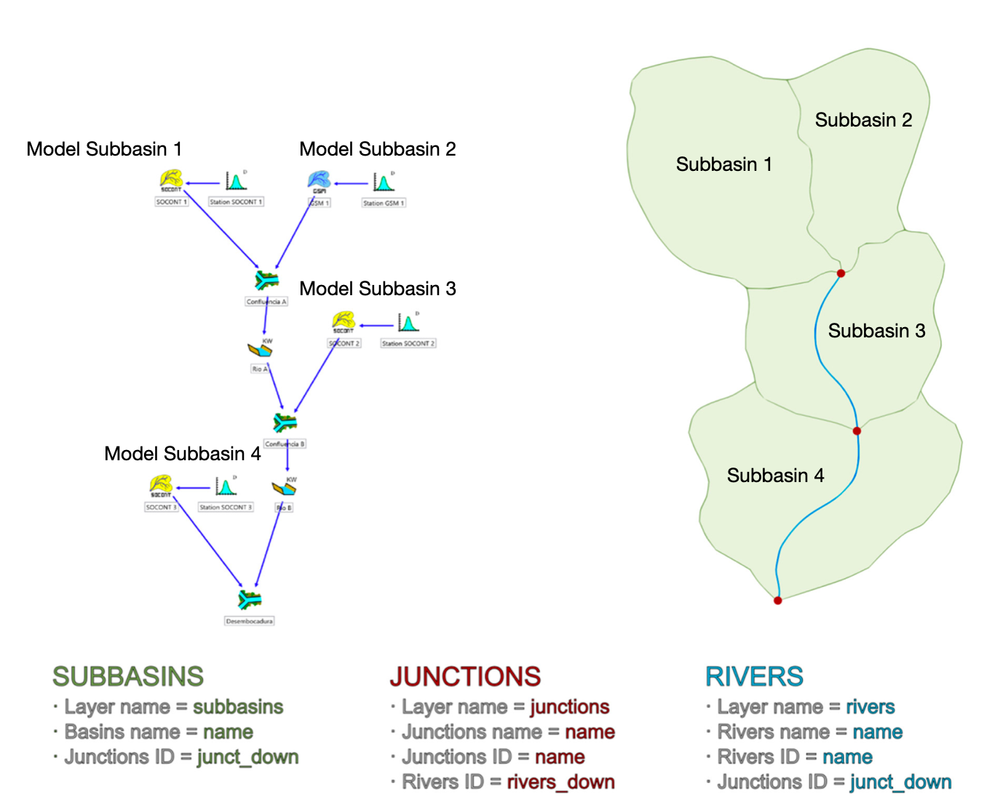
RSMinerve connects subbasins to junctions via the corresponding naming of the shapefile fields . River stretches run from upstream junction to downstream junction. Consistent naming of rivers and junctions need to be ensured in order to import correctly the shapefiles in RSMinerve.
In this Chapter we will demonstrate how to derive such GIS layers for a demonstration catchment. First, the data prerequisties are quickly introduced. Second, it is demonstrated how the reader can delineate the outlines of a catchment that contributes to discharge at the location of a given discharge station. Third, a QGIS Graphical Modeler model that we have prepared for the students takes the DEM, the delineated basin shapefile and the gauge point shapefile to compute subbasins, junctions and rivers.
Note
Go through the steps in this Chapter to generate yourselves the GIS layers of your sample catchment for later import into RSMinerve and processing.
The reader should be aware that the generation of these GIS files is a time consuming and iterative process and requires manual post-processing after their automatic generation. The result, however, will greatly simplify the hydrologial model generation in a next step. Hence, it is important to proerly familiarze yourself will all the neceessary preparatory steps.
5.1 Geospatial Data Prerequisites
Here, a local installation of QGIS and a basic understanding of Geographic Information Systems are required. Please see ?sec-study-guide-materials for more information how to install QGIS.
Tip
Appendix C in the Appendix walks you through in detailed manner of many of the required steps in the Chapter. Therefore, please also consult the resources there.
There are very many online resources that can be consulted for learning QGIS. You can google them or start with a video tutorial like the following one.
To process the data for your case study pack, make sure that you downloaded the corresponding files via this link. Depending on the catchment you have chosen, the files are either in the folder ./AMUDARYA, ./CHIRCHIK, ./CHU or ./SYRDAYA.
5.2 Catchment Delineation
Assuming that you have downloaded the catchment data folder of your choice, the corresponding DEM file should be loaded in a new, empty QGIS project. Prior to do this, make sure that the projects projection is in UTM (How to change the projection of a project). Check the projection of the DEM layer and reproject it if necessary (how to).
If you do not have a DEM available to start with, the process of downloading one is straight forward. Probably the easiest way is to install the QGIS SRTM3 plugin (how to). An alternative way is to download it via the USGS Earth Explorer (how to). Both solutions requires you to register an Earth Explorer Account (how to register). Finally and after downloading the DEM tiles for the region of interest, the tiles need to be merged (how to merge DEM tiles).
Typically, geospatial data from open sources is stored in the standard projection WGS84 (EPSG:4326). The WGS84 is in degrees, minutes and seconds but for hydrological analysis it is more convenient to have spatial layers in the UTM projection. Look up in which UTM Zone your catchment lies and re-project to that zone. In the example of the Chirchiq basin, the preferred UTM zone is 42N, i.e. EPSG:32642.
As a next step, we are going to load the shapefile of the discharge gauge station location. This file contains the point location where discharge is measured and from which on we want to delineate the upstream contributing area. The data is stored in the ./GaugeData folder and is called XXXXX_Gauge.shp where the XXXXX are placeholders for the five digit code that uniquely identifies your station. Once the shapefile is loaded, check in Properties/Information that it is correctly projected. If this is not the case, reproject to the relevant UTM zone as described above.
Now, we are ready to start with the catchment delineation.
Instead of just loading the existing catchment shapefile from the corresponding ./Basin folder (how to add a vector layer to a QGIS project), it is better to actually go through the steps step-by-step to learning of to derive them. The steps are also described in this online tutorial
To derive the the catchment area upstream of the discharge gauge that we have loaded in the previous step, the DEM is traced upstream until elevation values do not increase any more, i.e. until the boundary of the watershed is reached. The SRTM DEM contains the rounded average elevation in each cell of about 25 - 30 meters [m] resolution. Due to the averaging and rounding it may happen, that in a SRTM DEM, an upstream river cell contains lower elevations than the downstream river cell. If the catchment delineation algorithm reaches such a situation, it stops, thinking it has reached the boundary of the watershed. To avoid this, cells that form local depressions should be filled to form a river bed which is continuously increasing in elevation in the upstream direction until it reaches the watershed boundary.
In QGIS, there are several methods that can fill terrain depressions. We are using the r.fill.dir algorithm to perform this task. Figure 5.2 shows the process in detail. First, we make sure that we have loaded the DEM in the correct projection. Second, we open the Processing Toolbox and type r.fill.dir in the search bar and then double click on the corresponding algorithm. Third, in the openend window, we ensure that the DEM is selected under the Elevation header. On top of that, the Flow Direction and Problem Areas output files are not needed and their checkboxes unchecked.
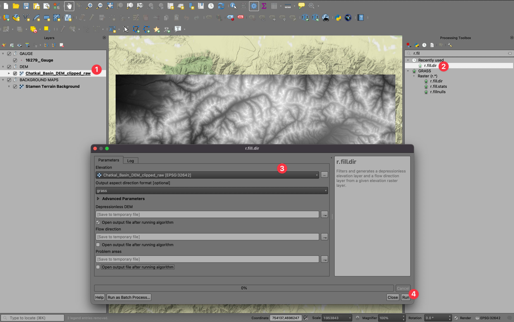
r.fill.dir algorithm.
If the algorithm has run, a new entry for the Depressionless DEM will appear in the layers panel with the correct DEM. This raster can now be used to delineate the basin area. The following steps need to be carried out for this;
- Use the
r.watershedalgorithm to obtain the flow accumulation and drainage direction rasters. - Ensure that the gauge is correctly located on the DEM
- Use the
r.water.outletalgorithm to delineate the upstream area - Convert the resulting Basin raster into a polygon via the
Conversion/Polygonizemethod.
We show the process in detail here.
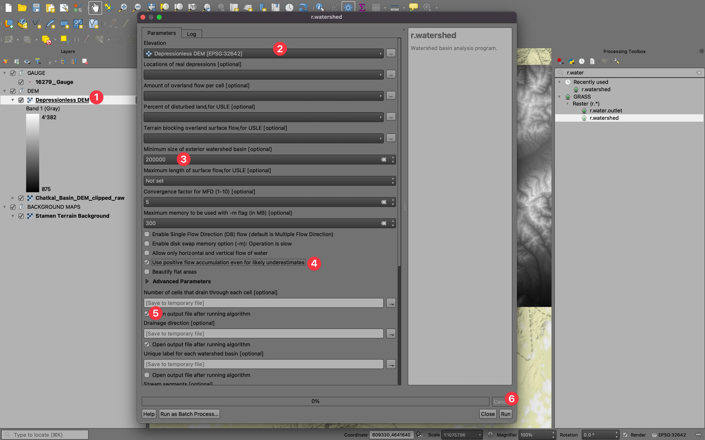
r.watershed algorithm. Select the sink-filled DEM, set the minimum size of the exterior watershed to 200’000, check the box in Use positive flow accumulation even for likely underestimation.
Figure 5.3 shows step-by-step how to run the r.watershed algorithm. First, make sure that the Depressionless DEM raster is selected in the Elevation field. Fill in 200’000 as a minimum size of the exterior watershed (this is a guessed number that normally yields good results). Also, check the the box to use positive flow accumulation even for likely underestimates. Finally, just select the top two output files, i.e., Number of cell that drain through each cell and Drainage direction. The remaining resulting rasters are not required during the next steps.
Once you click run, the resulting raster alyers will be computed. As is evident, the flow accumulation raster (called Number of cells that drain through each cell) contains a large range of values. The largest value is obviously in the one cell that drains the largest area of the DEM.
Tip
Use the raster calculator to compute the logarithm of the flow accumulation raster. This helps to better visualize the raster. This raster can be used to ensure that the gauge from which the upstream area will be delineated are actually correctly located on the streams. If misplacement is evident, we can edit the gauge shapefile and relocate the gauge to the correct river stretch.
Once it is ensured that the gauge is correctly located on the stream, we are ready to delieate the upstream area by using the r.water.outlet algorithm. For this, zoom in to display a close up of the gauge and select and open the r.water.outlet window. The algorithm only needs two inputs, i.e. the Drainage direction raster and the coordinates of the outlet point. Instead of manually entering them, you can just click on the mapto select precise point of the gauge location which will transfer the coordinates to the algorithm’s interface. After pressing run, the Basin raster will be computed. Figure 5.4 shows the process.
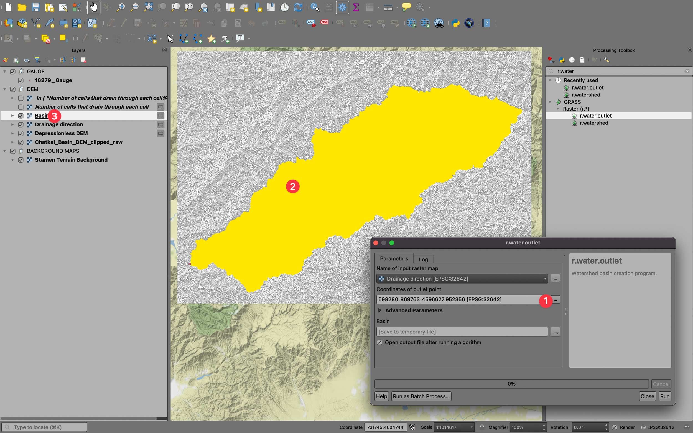
r.water.outlet algorithm. The resulting Basin raster can easily be polygonized.
As a final step, you should polygonize the Basin raster. We are now ready to run the process model which generates the required shapefiles for further processing in RSMinerve. The resulting vectorized basin can be stored in the corresponding folder on the local computer.
The process can be repeated for any other basin in a similar manner. Note also that in the case you have several gauges to map the upstream areas from, the Flow accumulation as well as the Drainage direction rasters can be computed once, stored, and reused again for all gauges.
We now have all the necessary files to process them in the Graphical Modeler model that is provided with the learning pack.
5.3 Preparation of RSMinerve Input files
You can download the Graphical Modeler model from the Students_CaseStudyPacks online repository. The model file is called rsminerve_gis_files_preparation_2022_win_os.model3 and should be downloaded in your local working directory. The model can then be loaded via the Processing/Graphical Modeler menu in QGIS. Once you have loaded the model, you should see the model pop up on your screen as is shown in a similar fashion in Figure 5.5. Note that the present version of the model file has been developed under QGIS 3.24 and may not run error-free in a different QGIS release.
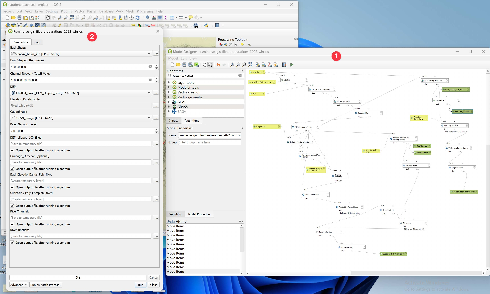
Figure 5.5 shows nothing more than a graphical representation of a script. This script is like a recipie to execute algorithms in QGIS in a sequential manner where an output of one algorithm feeds as input into the next algorithm. The yellow highlighted elements in window (1) are input parameters that are specified in the window (2) prior to the execution of the script. The green elements in the window (1) are the results that are stored during and after the execution of the algorithm and available for further processing then.
As explained above, the rsminerve_gis_files_preparation_2022_win_os.model3 model, in a nutshell, prepares input files for RSMinerve using the DEM, the basin shapefile as well as the location of the gauge as input. The key output elements are called SUBBASINS, RIVERS and JUNCTIONS.
Prior to the execution of the model (script), the parameters have to be set in a careful manner. For some of the parameter values, a first best guess might produce outcomes that are not a the required level of detail or, alternatively, too detailed. Depending on the basin under consideration, an iterative approach normally must be followed to arrive at the desired output as is explained in the following.
In Figure 5.6, we show a meaningful parameter selection for the Chatkal River basin in the Case Studies pack (Gauge 16279). The basin and gauge shapefiles as well as the DEM are the geospatial assets that need to be specified are shown in (1), (5) and (4). The following parameters are important to set correctly
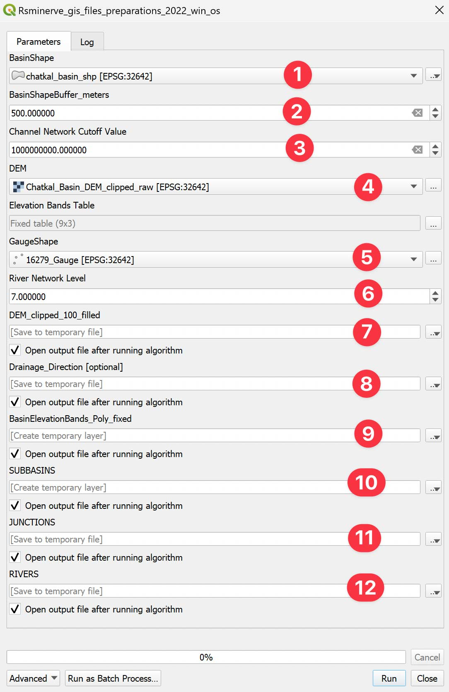
- BasinShapeBuffer_meters (2): This is buffer value to be specified in meters. The default value of 500 m is a value that can be used for a wide range of different catchment sizes and does not need to be changed.
- Channel Network Cutoff Value (3): This is a crucial parameter for the determination of the subbasin granularity. If many the main basin is to be subdivided into a larger number of subbtains, this value needs to be chosen to be around 107 - 108. For Chatkal, as our example shows, a perfect value for the subdivision into the main 4 subbasins is 109.
- Elevation Bands Table (4): Figure 5.7 shows the table than can be customized according to user needs and wants. The table specifies that granuarity with which the basin domain will be subdivided into elevation bands (hydrological response units, i.e. HRUs). As a rule of thumb, in climate change impact studies and for snow melt dominated basins, a spacing of 100 m - 200 m is an optimal choice for use with HBV models in RSMinerve. Note however, the finer the domain is, the larger the number of HRUs will need to be modeled which proportionally increases the computational demand of the hydrological model.
- River Network Level (8): Here you set a number between 1 and 8. The lower the number, the higher the number of tributaries and subtributaries that will be delineated for the RIVERS output shapefile. If you choose 8, this means that normally only the river’s main stem will be delineated. This is relevant for the case where not further subdivisions into small subbasins is desired for modeling in RSMinerve. 7 is a robust choice if only the main tributaries should be delineated.
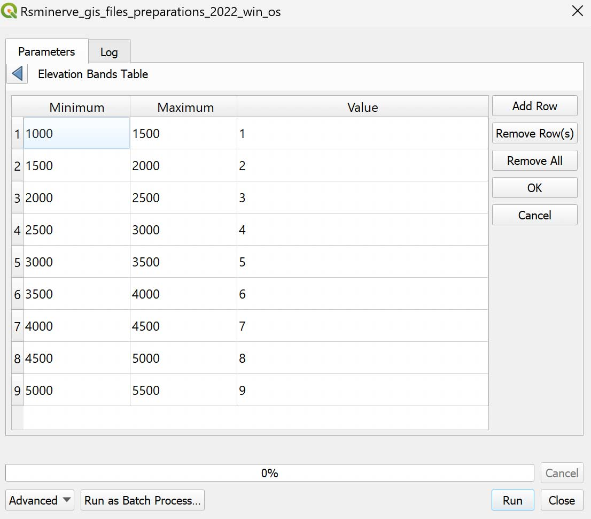
Tip
You will very likely have to iterate and run the model a couple of times to achieve the desired results. Try it yourself! Note that if you get an error message that POLYGONS.shp was not found, try increasing the Channel Network Cutoff Value by 50 % - 70 %.
Sample output results for our demonstration catchment are shown in Figure 5.8. The resulting layers for this demonstration are available in the data pack. We are, however, not quite done yet.
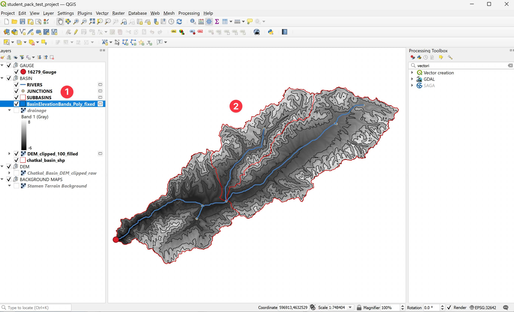
5.4 Post-Processing Results Shapefiles
As mentioned in the previous Section, we need to post-process the SUBBASINS, RIVERS and JUNCTIONS shapefiles so that they correctly contain the required fields as shown in Figure 5.1. A good way to post-process the files is to start with the RIVERS layer, the continue with the JUNCTIONS layer and to end with the SUBBASINS layer.
5.4.1 JUNCTIONS and RIVER Layers
In editing the junctions layer, the basic ideas are to edit the junctions layer in a way to remove junctions that are not needed, given the desired subdivision of the larger basin into subbasins. For the demo catchment shown in Figure 5.9, the siutation is explained in greater detail.
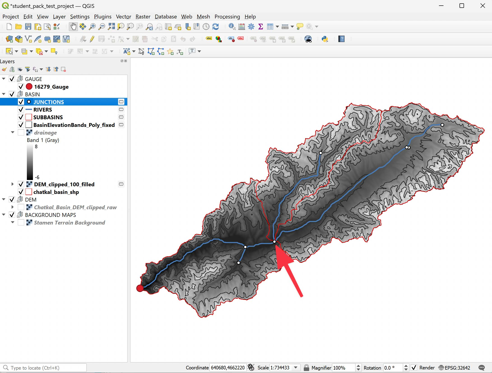
Tip
If you struggle with shapefile editing, please consult the detailed step-by-step guide as shown in the cooresponding Quick Guide in the Appendix.
Once we have removed the junctions that are not needed, we can very easily also remote the river lines that are not needed. Generally, we do not need river sections above the most upstream junctions for any given subbasin within the river basin or the river basin itself.
If we follow these guides, we end up with the results shown in Figure 5.10. After editing the attribute tables of these shapefiles, the files are ready for import in RSMinerve.
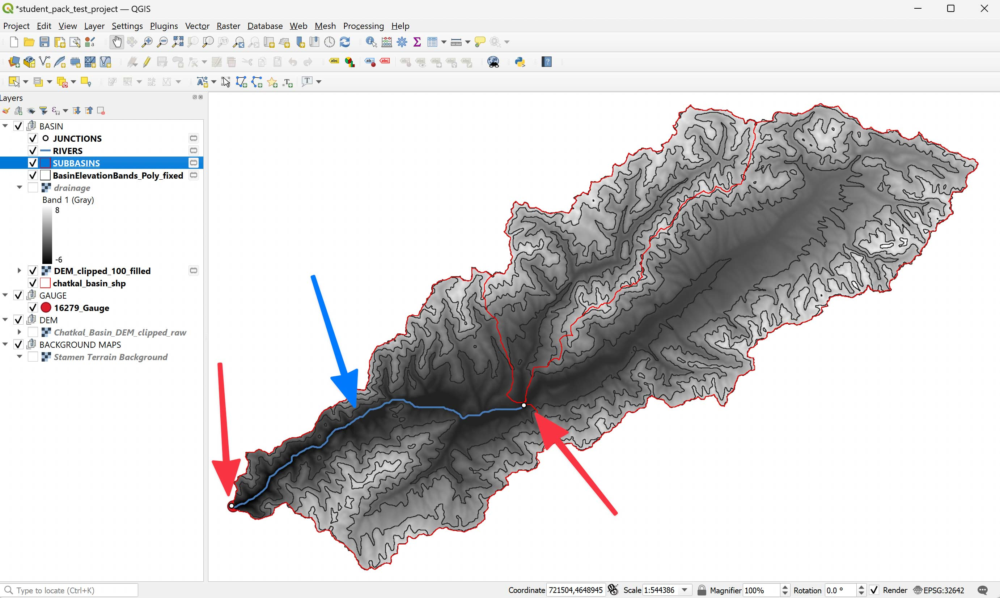
What is left now is to ensure that the attribute tables contain the correct fields and that these fields contain the correct labels. Figure 5.1 shows the required fields. These are
- JUNCTIONS: Junctions Name (junct_name), Junctions ID (junct_id), Rivers ID (riv_id)
- RIVERS: Rivers Name (riv_name), Rivers ID (riv_id), Junctions ID (junct_id)
The abbreviated field names are used in QGIS since field names are limited in shapefiles. The fields and values of the final junctions shapefile are shown in Figure 5.11. Compare this with the edited final attribute table of the rivers shapefile as shown in Figure 5.12.
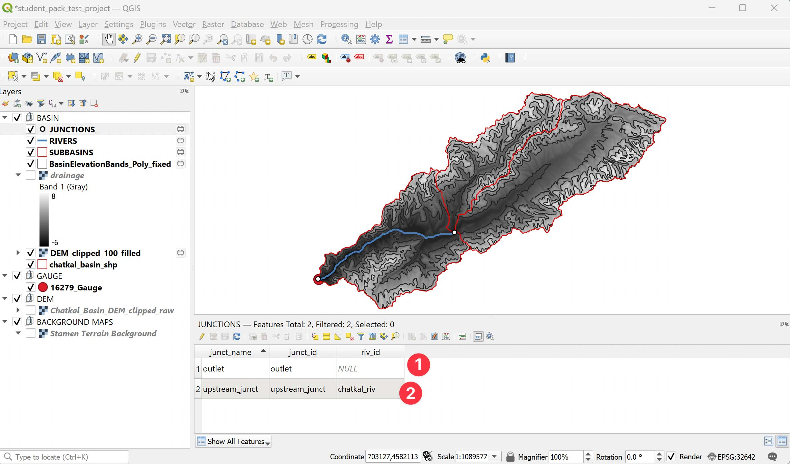
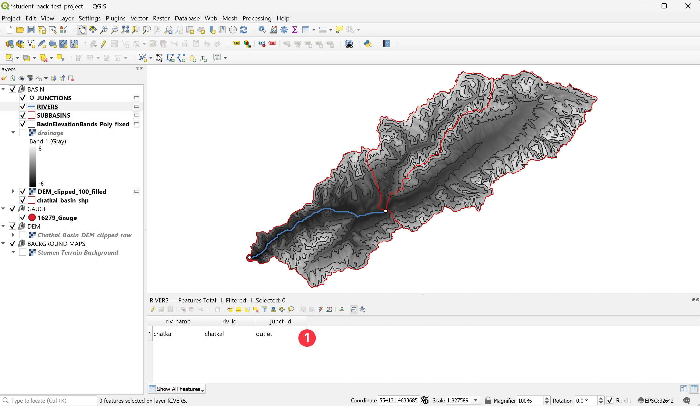
5.4.2 SUBBASINS Layer
Now, we are working on the subbasins. The major subbasins are highlighted in the following Figure 5.13. We call them Chatkal River downstream, Chatkal River upstream and Sandalash River. These big subbasins can be understood as hydrological response units (HRUs) for hydrological modeling.
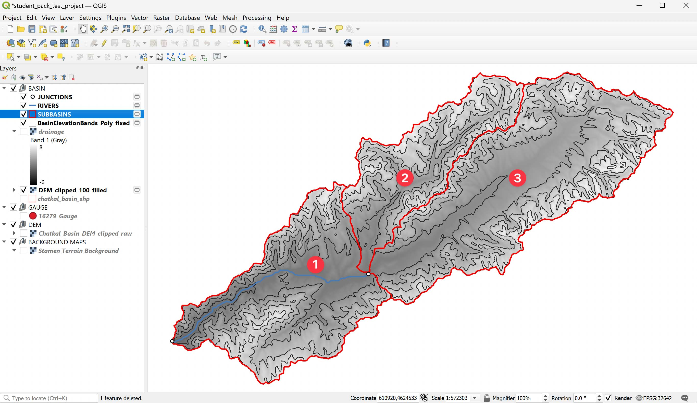
However, do not forget that we have classified the entire basin into zones of elevation bands. These are shown in the Figure 5.13 as polygons with black outlines from the shapefile layer BasinElevationBands_poly_fixed.shp. Exactly 7 elevation bands (or, in other words, HRUs) were delineated with the Graphical Modeler like this. We need to somehow intersect the subbasin HRUs with the elevation bands to generate elevation band HRUs for each subbasin. We will show the steps required to achieve this in the following.
First, we prepare the attribute table of the subbasins shapefile. The way this is done correctly for the demonstration catchment is shown in Figure 5.14. The attribute table contains two fields, i.e., basin_name and junct_id. We name the downstream and upstream sections of the Chatkal River with chatkal_ds and chatkal_us correspondingly. The cells of the field junct_id are populated with the name of the corresponding downstream junction where the subbasin drains into. Since both, the subbasin chatkal_us and sandalash drain into the junction upstream_junct, the later appears in both cells of the junct_id field for these rivers.
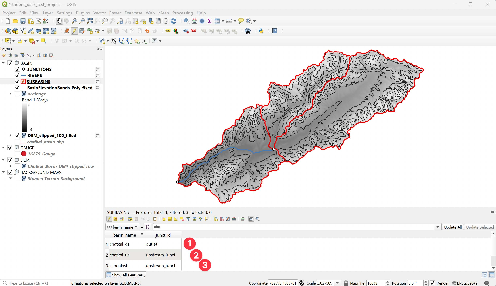
Second, we clean up and prepare the attribute table for intersecting with the subbasins layer in a thrid step. The attribute table of the layer BasinElevationbands_Poly_fixed contains three fields, i.e., ID, VALUE and NAME from which you can safely delete the ID and VALUE fields. What remains is the NAME field that contains a unique identifier for the elevation bands in ascending order, starting from the lowest. Figure 5.15 shows the attribute table.
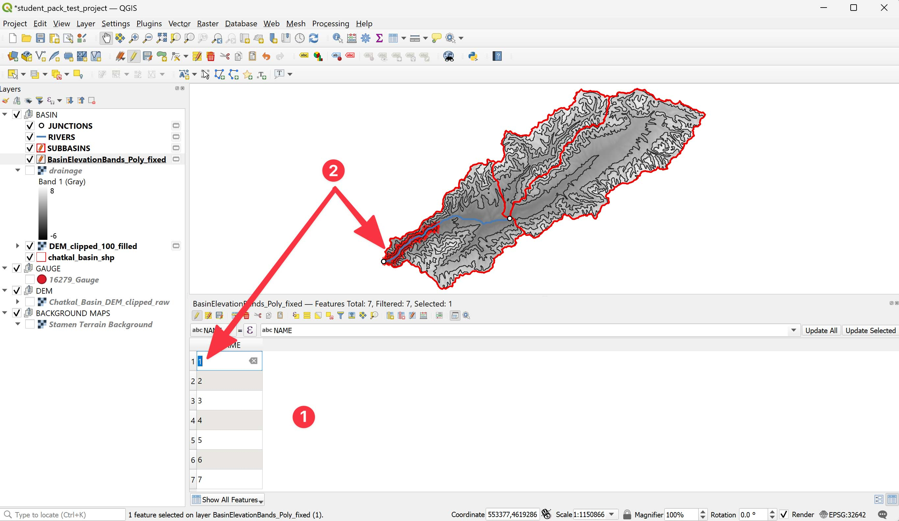
Third, we need to intersect the elevation bands shapefile with the subbasins shapefile. This can easily be accomplished using the Vector/Geoprocessing/Intersection tool in QGIS. When you select the Intersection Algorithm, make sure that you set the elevation bands shapefile as the Input layer and set subbasins shapefile as the Overlay Layer. When executed, you receive an attribute table that looks as the one shown in Figure 5.16.
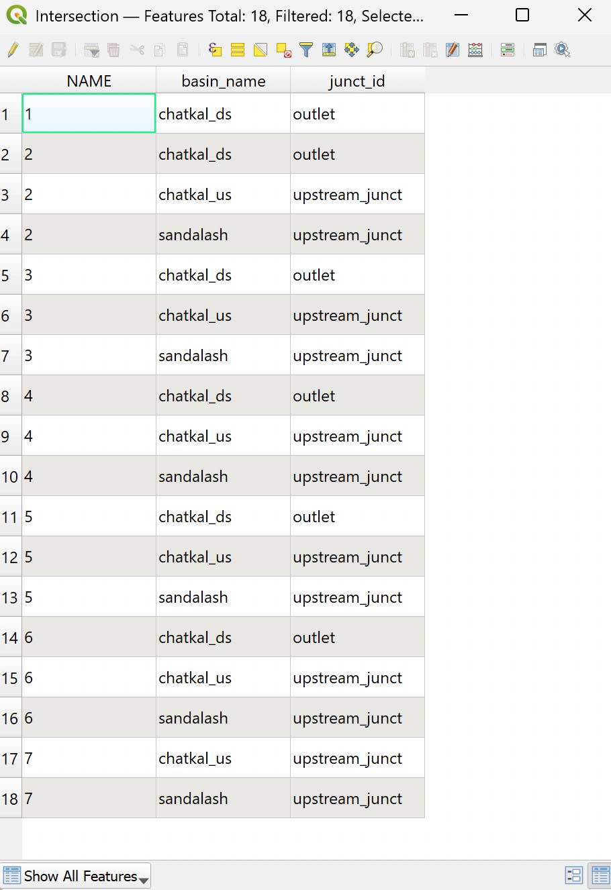
As a final step, you have to manually add the numbers stored in the NAME field to the basin names in the field basin_name. Alternatively you can open the field calculator overwrite the basin_name field using the formula: basin_name + ‘_’ + NAME. After this is done, you can safely delete the NAME field and have proudly completed the required steps to setup the GIS shapefiles that can be used as input to the RSMinerve hydrological-hydraulic modeling tool. Figure 5.17 shows the result.
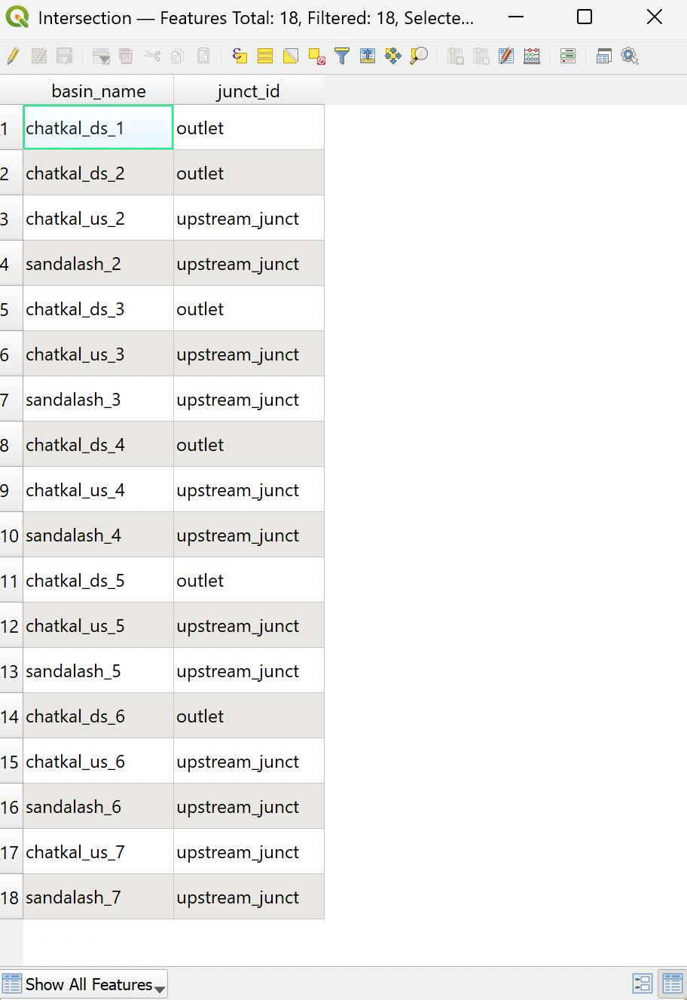
Using the tool Zonal Statistics from the Processing Toolbox, you can extract the mean elevation for each hydrological response unit. Save the elevation in a field named Z. The resulting GIs layers produced with the above described steps are available in the data pack
Intersecting with glacier outlines
If glaciers are present in the basin, discharge from glacier melt can be simulated using the GSM model in RS MINERVE. The SUBBASINS layer can be intersected with the glacier outlines from the Randolph Glacier Inventory (RGI) v6.0 data set see section on glacier outlines. The following step-by-step instructions show how to further process the SUBBASINS layer to for later automated model generation.
In the data pack of the book, you will find a GIS layer named 16279_RGI_Glaciers with the glacier outlines from the Randolph Glacier Inventory (RGI), clipped to the case study basin. The RGI glacier outlines are not always consistent with the basin boundaries derived using the process modeler in QGIS as described above because the two data sets are based on different data sources and spatial resolution. We therefore start out by estimating the glacier area and volume for each of the RGI glaciers in the basin. Open the field calculator in the attribute table of the RGI glaciers layer and estimate the glacier area in \(m^2\) for each glacier using the formula $area (see Figure 5.18).
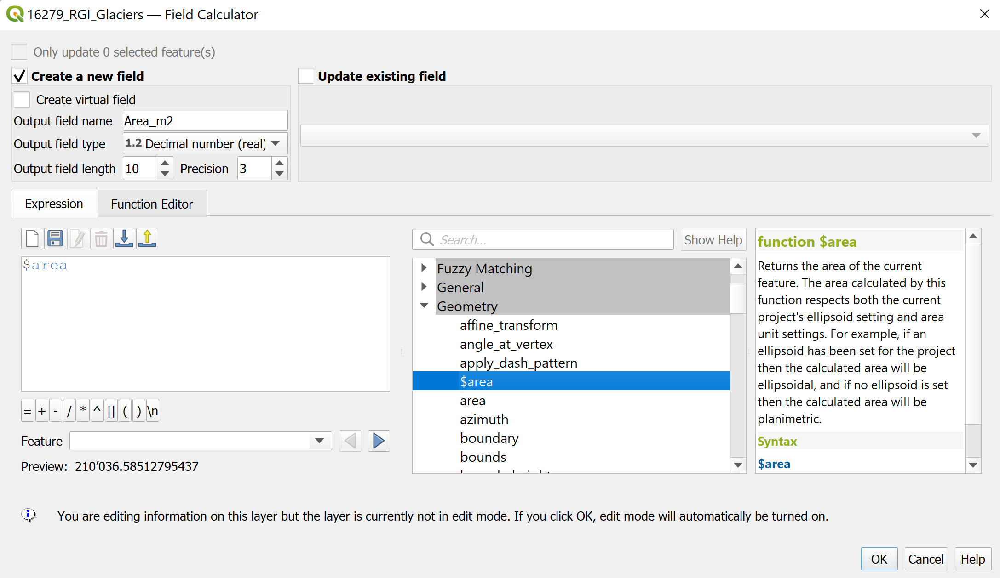
Area_m2). Make sure to choose decimal numbers for the output field type
You can then use an empirical function to estimate glacier volume in the field calculator; for example following Erasov (1968): \(V = 0.027 \cdot A^{1.5}\) with Volume \(V\) in \(km^3\) and Area \(A\) in \(km^2\)) as shown in ?fig-glacier_volume_field_calculator.
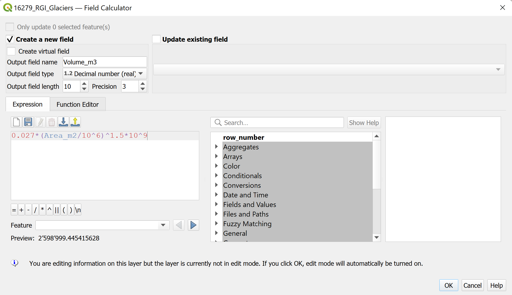 We now have an estimate of the water volume stored in each glacier. The goal is to have an estimate of glacier volume in each of the sub-basins and to edit the elevation bands layer in a way that automated model creation in RS MINERVE can create an appropriate GSM object for each glaciated sub-basin. In a first step, we clip the glacier areas from the elevation bands layer BasinElevationbands_Poly_fixed using the tool Vector/Geoprocessing/Difference. That layer now only contains HRUs for HBV model objects. You can save this layer to your GIS folder as it will later be merged with the layers for the GSM objects and be your final layer for import to RS MINERVE.
We now prepare the layer for the GSM objects. Intersect the glaciers layer with the elevation bands layer BasinElevationbands_Poly_fixed using the tool Vector/Geoprocessing/Intersection. From the glaciers layer you only need the fields RGIId, Area_m2 and Volume_m3. This will give you a layer with the glacier outlines and the elevation bands on the glacier areas. For each of the glaciers you now see in which elevation band it lies.
We now aggregate the glacier area and volume in each elevation band using the field calculator and the formulas sum(Area_m2, group_by := basin_name) and sum(Volume_m3, group_by := basin_name). The layer is then dissolved using the tool Vector/Geoprocessing/Dissolve with the dissolve field basin_name. This merges all features with the same basin_name into one geometric feature of the layer. The fields RGIId, Area_m2 and Volume_m3 are now obsolete and can be removed. We thus now have the total glacier area and volume for each glaciated HRU in the study basin. For simulating runoff formation with the GSM model, we still need an initial glacier thickness which we obtain using the field calculator and dividing the total glacier volume in the HRU by the total glacier area in the HRU. This gives us a total glacier thickness in the basin which is available for melt.
Now we can clean up the layer and merge it with the HBV elevation bands layer we prepared and saved earlier. You may want to edit the names of the features for the GSM objects with a prefix glacier or gl so that you recognize which hydrological model to assign to which HRU in RS MINERVE (see Section 8.6.2). You then merge the two vector layers and are ready to import them into RS MINERVE for automated model generation. We save the layer under the name 16297_Chatkal_RSM_HRU.
5.5 References
Erasov, N. V. 1968. “Method for Determining of Volume of Mountain Glaciers.” MGI, no. 14: 307–8.